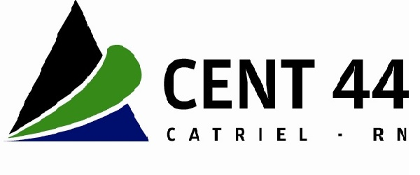

Preguntas Frecuentes
Todo lo que necesitas saber para inscribirte
Técnico Superior
El Técnico Superior en Soporte de Infraestructura de Tecnología de la Información, podrá desempeñarse en diferentes ambientes laborales, actuando como colaborador del profesional informático de grado (licenciado, ingeniero) en organizaciones de mayor envergadura.
Podrá presatar servicios de administración y soporte de sistemas de base y elementos de infraestructura para el procesamiento de aplicaciones informáticas. Brindar servicios de administración de la infraestructura tecnología en la cual opera el software de estas aplicaciones. Intervenir en forma puntual para resolver los problemas que experimente la insfraestructura o su eficiencia operativa y pongan en riesgo la continuedad del servicio a la organización usuaria de los mismos. Realizar un diagnóstico de incidentes que se presenten en la operatoria habitual del sistema y que puedan significar riesgos para la continuedad del servicio con rapidez, determinando las causas últimas de los mismos y administrar la solución.
25 años formando Profesionales para nuestra comunidad
Carrera aprobada por el Consejo Provincial de Educación de Río Negro
Resolución n°2746
El Técnico Superior en Soporte de Infraestructura de Tecnología de la Información prestará servicios de administración y soporte de sistemas de base y elementos de infraestructura para el procesamiento de aplicaciones informáticas, tales como servidores y clusters, ya estén ubicados localmente o en forma remota; dispositivos de almacenamiento masivo; otros dispositivos de hardware; sistemas operativos, máquinas virtuales y administradores de redes; servicios de comunicaciones a través de redes públicas y privadas; dispositivos de switching,firewalls; motores de bases de datos; subsistemas como servidores de e-mail, de impresión y,como parte de ello, podrá administrar, reemplazar y configurar componentes discretos e intercambiables de hardware o versiones de software, incluyendo el diagnóstico y resolución de incidentes, así como programar procesos para automatizar procedimientos repetitivos, participar en procesos de instalación o migración o intervenir en asuntos de seguridad.
Brindará servicios de administración de la infraestructura tecnológica en la cual opera el software de estas aplicaciones, interviniendo en forma puntual para resolver los problemas que experimente esa infraestructura o su eficiencia operativa y pongan en riesgo la continuidad del servicio a la organización usuaria de los mismos, o en forma programada para actualizar versiones, instalar componentes o migrar sistemas. Podrá solucionar los problemas observados o capacitarse para determinados proyectos, intercambiará información consultando con distintas fuentes, por lo general a través de Internet, colaborará con sus pares u otros especialistas propios o externos, siempre con acento 11 en lo tecnológico, pero con un objetivo de minimizar eventuales inconvenientes o interrupciones en el servicio de procesamiento. Con referencia a esto último, resulta de capital importancia que el técnico sea capaz de realizar un diagnóstico de incidentes que se presenten en la operatoria habitual del sistema y que puedan significar riesgos para la continuidad del servicio con rapidez, determinando las causas últimas de los mismos y administrar la solución, de acuerdo a normas y en tiempos muchas veces prefijados, que será realizada y verificada por sí mismo o en colaboración con otros integrantes del equipo o terceros especializados que brinden servicios, ya que su objetivo de base es lograr la mayor continuidad de los servicios que presta la infraestructura de Tecnología de la Información a fin de no afectar las actividades propias de la organización usuaria de dichos servicios.Primer Año
Segundo Año
Tercer Año
Todo lo que necesitas saber para inscribirte
Si, es necesario contar con el certificado analítico o la constancia de finalización de estudios.
Podes inscribirte y cursar las materias, pero se considera la situación en formato de alumno condicional y trendras tiempo hasta el 31 de Octubre para presentar la constancia de finalización de estudios secundarios.
El instituto organiza un curso de actividades pedagógicas destinadas a quienes ingresan a las carreras de Educación Superior. Las mismas tendrán una duración de dos (2) semanas y se realizarán de manera previa al inicio de las cursadas. Las actividades no son obligatorias pero se deberá estimular la concurrencia a ellas.